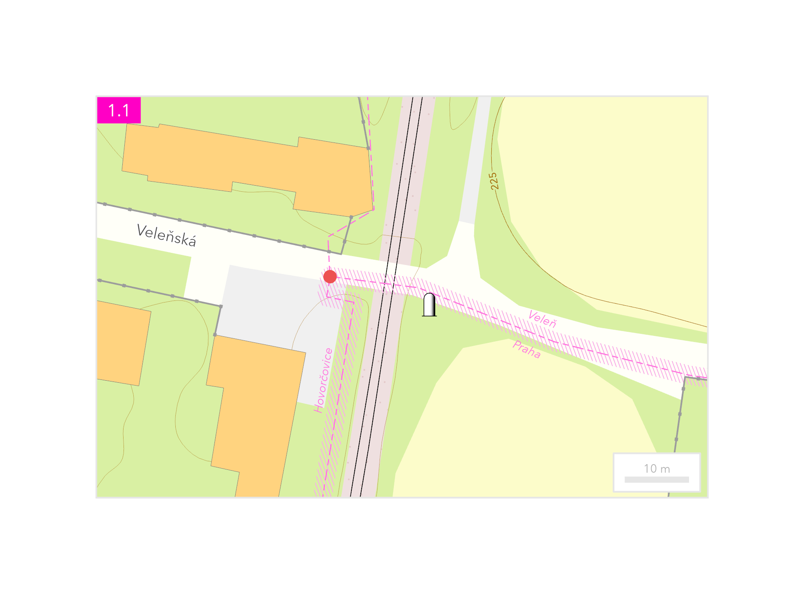
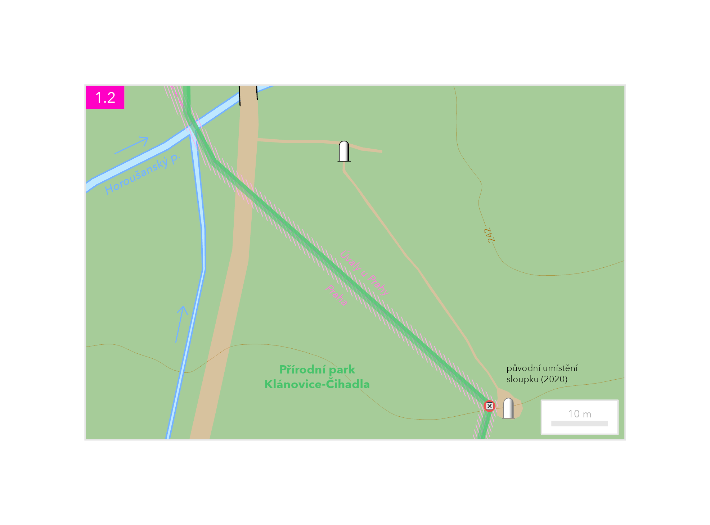
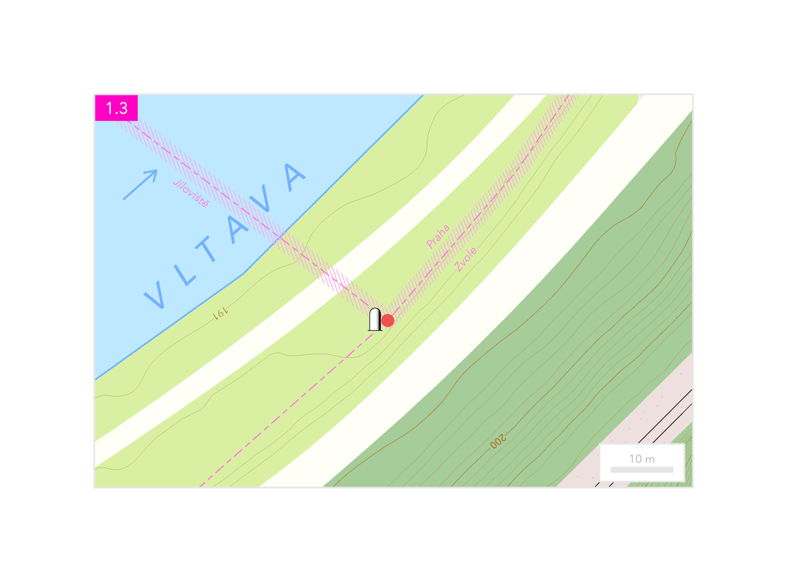
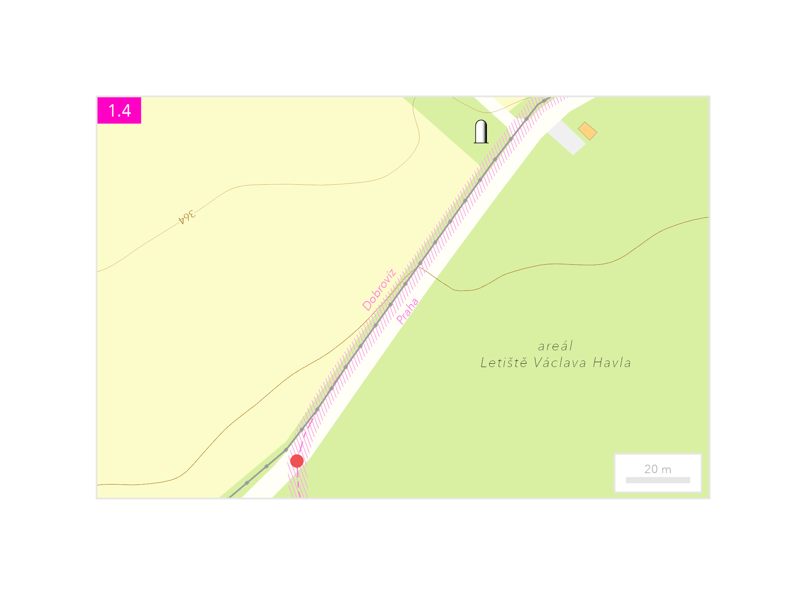

Pražské póly jsou čtyři krajní body území hlavního města: nejsevernější, nejvýchodnější, nejjižnější a nejzápadnější. V roce 2020 je Institut plánování a rozvoje Prahy označil betonovými sloupky, které měly tyto okrajové části města zpřístupnit jako cíle procházek. Sloupky však nestojí vždy přímo v přesné poloze krajního bodu. Jejich umístění ovlivnily majetkoprávní vztahy, nevhodné podloží i ochrana přírody. Nejmenší rozdíl je u jižního pólu na pravém břehu Vltavy pod Zvolskou Homolí, kde sloupek dělí od skutečné polohy jen několik metrů. Naopak západní pól leží v nepřístupném areálu Letiště Václava Havla, proto je jeho označení umístěno poblíž letištního plotu, více než sto metrů od skutečné hranice Prahy. Nejvýchodnější pól leží v Klánovickém lese, severní poblíž Hovorčovic.
| Nejsevernější bod (1.1) | severní šířka | východní délka |
|---|---|---|
| Betonový sloupek | 50°10′38.6076″ | 14°31′37.4664″ |
| Poloha podle katastrální mapy | 50°10′38.7480″ | 14°31′36.6816″ |

| Nejvýchodnější bod (1.2) | severní šířka | východní délka |
|---|---|---|
| Betonový sloupek | 50°05′14.7228″ | 14°42′23.1372″ |
| Původní betonový sloupek | 50°05′13.2576″ | 14°42′24.6060″ |

| Nejjižnější bod (1.3) | severní šířka | východní délka |
|---|---|---|
| Betonový sloupek | 49°56′30.8472″ | 14°23′43.9260″ |
| Poloha podle katastrální mapy | 49°56′30.8400″ | 14°23′44.0268″ |

| Nejzápadnější bod (1.4) | severní šířka | východní délka |
|---|---|---|
| Betonový sloupek | 50°06′14.1300″ | 14°13′30.8028″ |
| Poloha podle katastrální mapy | 50°06′10.7856″ | 14°13′27.9732″ |



{kind=link}
{kind=link}
{kind=link}
{kind=link}